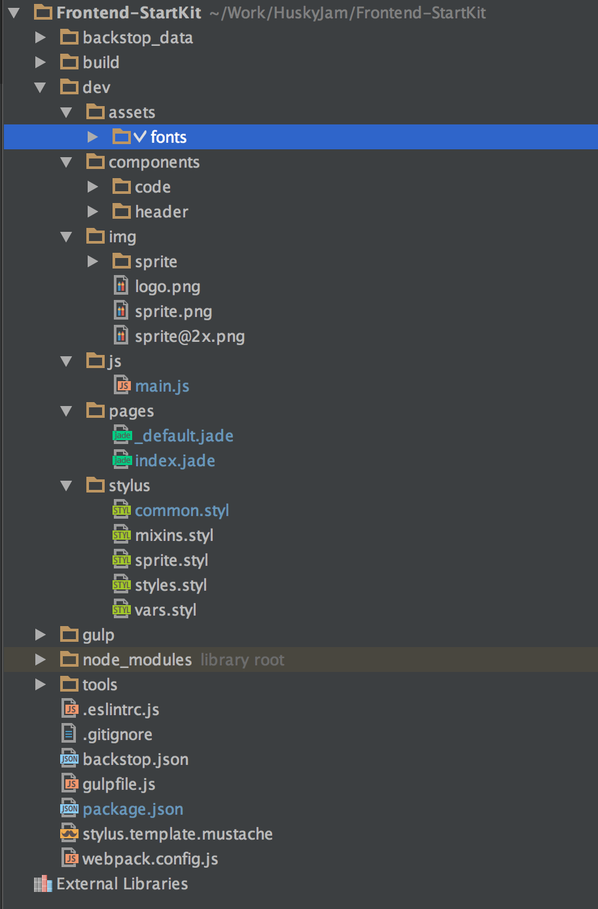

Запускать на 6 версии Node.js
NPM команды
- Запустить сборку в development окружении с watch и live-reload сервером
npm run dev - Собрать build для продакшена
npm run build -
Создать компонент. componentName - обязательный параметр, имя компонента. По умолчанию создаются файлы .styl и .jade.
Файл .jade создается с префиксом _ , чтобы отфильтровать его при сборке шаблона. [js yml json] - необязательные параметры для создания файлов соотвествующего типа.
npm run add componentName [js yml json] -
Добавить страницу.
npm run add page pageName [js yml json] - Удалить компонент или страницу.
npm run rm componentOrPageName
Gulp команды
- gulp assets - скопировать файлы из dev/assets в корень build
- gulp build - собрать билд для production. Для корректной работы запускать с NODE_ENV=production. То же самое, что npm run build.
- gulp - дефолтная команда, собирает и следит за изменениями в dev, запускать с NODE_ENV=development. То же самое, что npm run dev.
- gulp imagemin - сжать изображения и скопировать их в папку build/img
- gulp jade - собрать jade файлы в html
- gulp serve - запустить локальный сервер с livereload
- gulp sprite - собрать спрайты
- gulp styles - собрать стили
- gulp watch - следить за изменениями в dev
- gulp webpack - собрать js
Структура проекта

- build - готовая сборка
- dev - исходники
- dev/assets - файлы, которые не требуют никакой обработки, например, шрифты. Отсюда gulp скопирует их в корень сборки.
- dev/components - блоки сайта (header, footer, nav, slider etc). Каждый компонент может содержать файлы разных типов, которые иклудятся в соотвествующую часть проекта: скрипты в js/main.js, стили - в stylus/styles.styl, и тд.
- dev/img - изображения
- dev/img/sprite - иконки для спрайта. Каждая иконка должна быть в двух версиях - для стандартных дисплеев и для ретины. Называем их соответственно filename.png и filename@2x.png
- dev/common/ - общие файлы (скрипты, стили, шаблоны) для всего проекта
- dev/common/js/common.js
#v1 - точка входа для js скриптов. Подключаем сюда все из компонентов и библиотек.
или
#v2 - общие скрипты для всех страниц. Для отдельных страниц создаются свои точки входа в которые подключаются нужные для страницы скрипты. - dev/pages - страницы сайта. Отправляются в корень папки build и доступны на 127.0.0.1:3000/pagename.html
- dev/common/styles - общие стили сайта, не относящиеся к конкретным компонентам. А так же миксины, переменные и все такое.
- dev/common/styles/styles.styl - собираем тут все стили в нужном порядке.
- dev/common/styles/mixins.styl, dev/stylus/placeholder.styl - миксины, плейсхолдеры.
- dev/common/styles/vars.styl - переменные и настройки проекта.
- dev/common/styles/common.styl - общие и глобальные стили проекта.
- dev/common/styles/fonts.styl - подключение шрифтов.
- dev/common/styles/sprite.styl - сборочный файл для спрайтов.
- gulp - таски
- backstop.json - конфиг для регрессивного тестирования. Настраиваются брейкпойнты, страницы, блоки, которые надо и не надо тестить.
Stylus плагины
Normalize.css
- Для унификации базовых стилей подключен normalize.css
Stylus миксины
- retina_sprite
-
Сохранить в папку dev/img/sprite две версии картинки imgname.png и imgname@2x.png.
Переменная для спрайта будет доступна в виде $s-imgname.
Добавить к свойствам селектора миксин retina_sprite и передать ему в качестве аргумента $s-imgname.
.icon--arrow retina_sprite($s-arrow-right)
PostCSS плагины
- lost grid сетка
- css-mqpacker складывает все media queries в конец файла
- postcss-focus добавляет :focus стейт, если он не описан, по аналогии с :hover
- postcss-flexbugs-fixes фиксит баги флексбокса
- postcss-pr заменяет пиксели на rm (пример: 16pr = 1rm)
- postcss-pe заменяет пиксели на em (пример: 16pe = 1em)
- Можно дополнительно использовать любые другие postcss-плагины, добавляя их в таск styles
.pipe($.stylus({ use: [nib(),rupture(), poststylus([ 'lost', cssMqpacker({ sort: function (a, b) { return b.localeCompare(a); } }), 'postcss-focus', 'postcss-pe', 'postcss-pr', 'postcss-flexbugs-fixes', ... ])] }))
Подключение jquery плагинов
- В файле компонента
import 'slick-carousel'; import 'modules/slick-carousel/slick/slick.css'; export default () => { $('.slider').slick({ slidesToShow: 1, slidesToScroll: 1 }); } - В файле main.js
import slider from '../components/slider/slider' $(function(){ slider(); }); - Если возникнут проблемы, вот тут есть варианты решения: Managing Jquery plugin dependency in webpack
Тестирование BackstopJS
- В директории
выполнить./node_modules/backstopjs
для создания эталонных скриншотов. Затем, после внесения изменений -npm run referencenpm run test